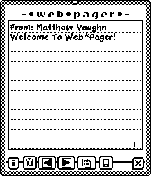
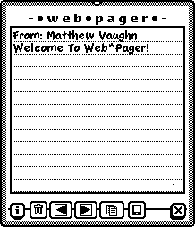

|
|
NPDS is as much a concept as anything else. When the Newton was conceived and then sold a fundamental tenet of its design was its portability. Yet, never during the course of its short and brilliant lifetime was it actually PORTABLE.
You could connect to any desktop.. as long as NCU or NBU or Xport was installed.You could print out information.. if you had a compatible printer.
You could let others see your schedule.. if they had a fax to send it to.. or a Newton of their own.
Etcetera, Ad Nauseum, Ad infinitum...
NPDS was designed to address some of these shortcomings and also as a proof of concept that PDAs should have HTTP servers embedded in them as a means of communicating with the outside world.
So, to answer the original question: "What is Newton Personal Data Sharing?"
NewtonOS Personal Data Sharing is a suite of software for the Newton that allows you to transparently share Notes, Calendar Entries, and Cardfile entries with clients on the WWW. It's a battery powered webserver that sports features often reserved for "big iron" servers.. scriptability, security, dymamic content generation, instant messenging, etc..
Approximately 256 K of either* Internal or Card RAM for all
the NPDS Components and Soups.
*Keep all components of NPDS on the same store if possible.
|
Package |
Function |
Required |
|
NoteServ |
Makes the Notepad Available on the WWW |
YES |
|
DateServ |
Makes your Calendar Available on the WWW |
RECOMMENDED |
|
CardServ |
Makes your Names File Available on the WWW |
RECOMMENDED |
|
Tracker Client |
Enables you to sign on to a Tracker when online |
OPTIONAL |
|
Web*Pager |
Recieve Instant messages from Visitors to your Newton (urlCop is required with Web*Pager) |
RECOMMENDED |
|
NPDS Setup |
Configuration options for the NPDS Suite |
YES |
|
Script Editor |
Write and edit custom Server-Side Scripts for NPDS |
OPTIONAL |
|
GIFServer |
Serve Screenshots off of your Newton |
OPTIONAL |
|
GIFMaker |
Extension needed for GIFServer |
OPTIONAL |
|
urlCop |
Extension needed for Web*Pager to reply to Web*Pages |
YES* |
|
Scripts |
Example embedded NPDS Scripts for your pages |
OPTIONAL |
 Starting
Up
Starting
Up
When the connection is established, your server's IP address will show up in the area marked "Not Assigned" in the illustration on the right (D). The status indicator (B) will change from "IDLE" to "INIT", pause while the other parts of the server start up, then proceed to "RDY". You'll also notice the Start button has been replaced by a Stop button.
Shutting Down
To shut down your server, tap the Stop button (A). A slip will come up telling yout that the server is disconnecting.If it doesn't go away in 30 seconds, then the connection actually has been dropped: the operating system just forgot to tell the slip about it (Bug Alert) You may go ahead and close the slip by tapping its close-box.
Hit Counter (C): Offers a display of the total number of files served since the last install of nHTTPd.Info Button (E): Under this button you can find the Cache Manager, as well as the Standard "About", "Help", and "Prefs" entries.
Plugin Menu (F): Pop-up access to the Prefs/Application screen of all installed Plugins. When it is first tapped, there will be a short delay while the names of all plugins are collected. Don't Panic.
Notify Star: (Not shown in screenshot) Tap the star and nHTTPd will minimize to a small blinking star at the top of your Newton screen.
Recent Hosts: If Access Logging and DNS Lookup are turned on, tapping the Status Indicator (B) will give you a popup list of the last ten unique clients to visit your server since you started it up.
OK. So things didn't work out and you want this thing off of your Newton. Let me tell you how to make sure ALL the data from the NPDS installation is gone.
*Standalone Software: http://www.standalone.com/
 Introduction:
Introduction:NoteServ is simple extension with a lot of power behind it. Any note you write and file in a specially selected folder will be made available on the WWW when nHTTPd is active. These Notes can be
and NoteServ will dish them up just the same, turning them from Notes to Web pages behind the scenes. You don't have to do a thing!
You're not limited to boring old notes, either. You can also serve up fancy hybrid HTML/text notes, straight HTML notes, or run CGI scripts from within your Notes. Information on how to do these tasks is in the "Advanced" Chapter.
However, let me STRESS once again that you don't need to mess with the advanced stuff at all to make NoteServ and NPDS work for YOU. It's designed to be simple for the casual user but powerful for the super-user.
We've established that making Notes available to WWW visitors is as simple as writing down some text in a Note and filing that Note in the folder you have selected to be your WWW directory. There's no length limit on these notes other than the length imposed by the Newton Operating System.
Let's discuss some special features of NoteServ you can use to GREATLY enhance the content of your served Notes that don't require any work on your part.
NoteServ contains two services for submitting notes remotely via a WWW browser. Users can post to the directory designated as the WWW service directory. These are special notes and will be designated via an internal mechanism as being client posted. You, the administrator, can post notes using a separate service. You can post to any folder on your Newton (allowing you to send data to your Newt that's NOT available on the Web). You'll need to know your admin password and be able to limit your Notes to around 2048 bytes but other than that you're set. So how do these work?
If you point the browser to http://your.newton.com/html/postnote.html you'll get the Whiteboard for Public Users screen which contains a form for submitting Name, Title, and Note Text. One can easily embed this URL with the text "Whiteboard" by inserting the Server Side Include <NOTE_POST> where you want a link to the Public Whiteboard.
There is no SSI for this path (though you could write one..). To get to it, point to /html/admin-post.html Once there, enter the title and text of the note, choose a folder, and enter your admin password. Your note will be posted into that folder.
Within note, any properly formatted URL will automatically be turned into a clickable link. For example, if you write http://www.apple.com/ in a Note, it will be displayed on the client's web browser as http://www.apple.com/ The same is true for gopher, ftp, mailto:, and even hotline addresses. This is great for making lists of hyperlinks, etc for later viewing or sharing.
You can apply preferences to the way NPDS formats your Notes. In the Appearance Panel of NPDS Setup program, you'll find several variables that you can set. You can specify
In addition, to facilitate display of non-American ASCII characters you may wish to specify a MIME character set.
Quickly, NoteServ supports a range of special variables called Server Side Includes. Basically, they're stand-ins for common things like your Name, City, etc as well as for specialized functions like a Search Form for your Notepad that are replaced an instant before a page containing them is sent to a WWW Client. We'll talk about these in later sections of the Manual but I thought I'd introduce them to you early on since they are a core NPDS concept.
Path: accessible via /dates/index.html
SSI: <DATES>
Sample Output: DateServ Default Page
DateServ makes items in your Dates database available over the WWW in a number of formats. To do this, it reads directly from the Dates soup, so any 3rd party applications that alter or extend the Dates application may cause you problems. However, there are no reports of major conflict so forge ahead!
DateServ supports two modes of access:
The paths to the day and week view are, respectively, /dates/day.html and /dates/week.html The reason these items are pre-specified is to allow DateServ to pre-cache them when NPDS starts up. This minimizes time required for a request for these items to be served.
Example: You want to link to your weekly agenda from a page in
your Notepad. You'd insert this HTML code
<A HREF="/dates/week.html">Weekly
Agenda</A>
somewhere in that note.
Speaking of embedding things, you can also directly embed the Daily Agenda (as a table) by using the <AGENDA_DAY> Server Side Include under Notepad Server. When the note containing this tag is served up, a table containing the day's agenda will be inserted into the note's HTML.
Q: I just added a meeting to this week's schedule and it hasn't shown up yet. Why?
A: The daily and weekly overview are cached files. Your new event will show up in an hour or so after the cached version of day.html or week.html has expired.
Q: How can I prevent access to my Dates data from outside my intranet, LAN, etc?
A: At present you cannot. However, though NPDS 2.0 has barely shipped, the next version of NPDS will support basic password protection and IP range restriction for enhanced security of you sensitive data.
Q: Can I post to the Datebok from the Web?
A: Not yet. I decided to wait for better security before implementing this feature in a publicly available package. MY Newton allows posting via the web ;-)
Q: Can I change the format of DateServ's output?
A: No, but if you're enterprising you can hack the source any way you want. The HTML templates and constructor scripts are well delimited and fairly modular.
Q: Do you have any support for MoreInfo?
A: No. I can't do it without reverse engineering the MoreInfo software which is not legal. Silverware is welcome to add support to the DateServ source for its product.
 CardFile
Server
CardFile
ServerPath: accessible via /cards/index.html
SSI: <CARDS>
Sample Output: CardServ Default Page | CardServ Search Result
CardServ allows users to search the Names (Cardfile) database, receive a ranked list of entries matching your search terms, then view any of those entries in one of two ways:
You can access CardServ via the inserting the URL path /cards/index.html or by embedding its SSI, or you can have the actual search form embedded in a note by using the SSI tag <NAME_SEARCH>.
Show Notes: Since many of us store provate information in the Notes of our Name cards, un-check the "Show Notes" box to keep this information hidden. It is set to TRUE by default until you change it the first time.
Active: NPDS Plugins are dynamically loadable/unloadable. If you wish to turn on or off service of Names data, open CardServ and de-check this box. To turn Names back on, re-check it. You no longer need to freeze most NPDS plugins to de-activate them.
Q: I don't use Netscape Communicator. How can I utilize the wonderful vCard standard?
A: Well, some programs support importing of vCard data from a text file. You may choose to download a person's vCard to disk then import it manually. Other than that, I don't know. I wrote CardServ for my own use.
Q: Can I use CardServ as a sync tool with a Pilot or my desktop computer?
A: In its current state, no. Future development may head that way here in Lightyear Land or someone may decide to implement it on their own. One-way transmission of massive amounts Cards data is more likely to come soon than two-way syncing. For example, early experiemental builds of CardServ had an LDAP server built in as the query system for the Card file which supported transfer of the whole Cardfile as an LDAP database.
Q: How can I prevent access to my Names data from outside my intranet, LAN, etc?
A: At present you cannot. However, though NPDS 2.0 has barely shipped, the next version of NPDS will support basic password protection and IP range restriction for enhanced security of you sensitive data.
Q: Can I post to the Cardfile from the Web?
A: Not yet. I decided to wait for better security before implementing this feature in a publicly available package. MY Newton allows posting via the web ;-) so it's on it's way.
 WebPager
WebPagerPath: accessible via the path /pager/
SSI: <PAGER>
Web*Pager brings AOL and ICQ style instant messenging to the Newton. Visitors to your NPDS server can send you a "Page" which will pop up in this pager-type applet on your Newton.
The backlight will flash, a tone will sound, and then, if you have Macintalk installed, the message will be SPOKEN OUT LOUD!!!
You can also respond to some pages sent from other Newtons.
Interface:
In the screenshot on the right, the buttons along the bottom of the "Pager" are info, Delete, Back, Forward, Save, Reply, Close.
You can also scroll up and down in a Page as well as select and copy Page text to the Clipboard.
Two Way Paging
Note the Newt Button next to the Save icon in the screenshot. This button appears when the sender of the page is using a Newton Browser.
The assumption is that he/she is also running NPDS. If you tap the Newt Button, your browser will launch and access the sender's copy of Web*Pager via NPDS. Voila, you can reply to the message from your browser. I know this is a hack, but it's the best I can do for freeware! I am working on pager clients for MacOS and (maybe) Win32 and information on these will become available later.
urlCop: Don't forget to install urlCop or two-way paging won't work. For those of you who don't know, urlCop is somewhat like Internet Config for the Mac. It provides a system-level URL handler.
The option to speak or not speak is controlled by an entry you'll find under Web*Pager's info button since some of you will not want a chatty Newton...
 What
if you had a Newton WWW Server and nobody came? I mean, maybe they
would want to, but how are they going to know your IP address?
What
if you had a Newton WWW Server and nobody came? I mean, maybe they
would want to, but how are they going to know your IP address?
We have a solution. When you go online, your Newton can now register with a tracker. People who want to find Newtons online simply visit the tracker and they'll find a link to your Newton if its still active.
NPDS Tracker consists of two applications that communicate with each other.. Tracker Client (which is a NPDS plugin) and Tracker Server which is a MacOS CGI/daemon hybrid.
When NPDS starts up, Tracker Client is activated by the NPDS architecture and told to register. It sends, using a special protocol, information needed to find your Newton on the net as well as a description of your Server. The Tracker Server records this information for later use. Your NPDS continues to start up and that's it, from your Newton's end of things.
On the other end of things, Tracker Server is busy. People who want a hyperlinked list of Newton servers are accessing it with their WWW browsers while it is also constantly monitoring the status of each Newton that has registered with it. If a set period elapses where Tracker Server can't connect to your Newt and retrieve a special page (served by Tracker Client), it is removed from the list of active Newton servers. The ususal period for this expiration is 45 minutes to one hour and a Newton is usually given 3 chances to respond before being removed.
Use you favorite package installer to load Tracker Client onto the same store as all the other NPDS components. If you wish, install a NPDS Tracker Configuration package to pre-set all the prefs for you. Once Tracker Client is configured, it functions automatically on server startup.
Manually setting up Tracker Client is also easy:
You'll notice you also have a checkbox called "Register With A Tracker". If this box is unchecked when NPDS starts up, Tracker Client will NOT log into its specified Tracker Server.
You can easily remove yourself from a Tracker (after an expiration period has elapsed) by de-selecting this checkbox. Conversely, if you are running your server and decide after starting it up that you DO want to be on the tracker, turn this on and tap the "UP" icon at the bottom of the window to manually transmit your data to the Tracker Server.
The Slash-Circle icon is for cancelling a connection that seems to have gone awry. I have never needed to use it but it's still there in case of emergency.
Once you're ready to go, open up nHTTPd and start it up as usual. The status line will progress from IDLE to INIT and pause for a bit. A NIE status dialog will pop open twice (that's Tracker doing its job), then the status line will read READY and you'll be all set. To verify that your server has registered, point your browser to http://your.newton.net/traq/ and you'll see a page pointing you to the tracker. Click the link and see what develops: if all went well, your Newton is listed happily on the tracker!
|
Connected |
After a few minutes (15-30 minutes), Tracker Server will come by and ask for a special response from the /traq/ directory. If its request is fulfilled, your Newton's lease on life at the tracker will be renewed for one expiration cycle. You'll know this has happened because the status icon of nHTTPd will change from the standard Connected icon to the Tracked icon. This verification will continue until your Newton no longer responds to requests from the Tracker Server. |
Tracked |
No major problems have been reported. If you're on a long time, NPDS can tend to slow down, or if you have a very active server. In either of these cases, you may find yourself wrongly removed from the Tracker. To get back online, just open the Tracker client and tap the UP icon.
The Tracker server is a CGI that runs under any MacOS Web Server that supports the standard Mac CGI model (Personal Web Sharing, WebSTAR, NetPresenz, etc). It'll run on a 68K but due to some minor glitches, it's not supported on that platform. If you're interested, email me at matvon@kagi.com and perhaps we can get you set up.
This is the Read Me file for GIFMaker written by its author, Brian Ogilvie.
 GIFMaker
is a Newton extension that allows you to create GIF images of all or
part of the Newton screen. By using GIFServe you can make your
Newton-based web page unique! Once you are serving GIFs from your
Newton, you can save the GIFs in your desktop browser using the usual
Save Image command.
GIFMaker
is a Newton extension that allows you to create GIF images of all or
part of the Newton screen. By using GIFServe you can make your
Newton-based web page unique! Once you are serving GIFs from your
Newton, you can save the GIFs in your desktop browser using the usual
Save Image command.
With GIFMaker, you can set the foreground and background colors by tapping on the GIFMaker icon in the Extensions folder of the Extras Drawer. A set of sliders for Red, Green, and Blue for each of foreground and background are provided. The default is black images on a white background.
To use GIFServer with Newton Personal Data Sharing, just access:
http://your.newtons.ip.addr/screen/anyname.gif
The GIF format is owned by Compuserve while the LZW compression used in GIFs is patented by Unisys Corp. Toad Hollow Software Co. acknowledges the great generosity of these firms in making the GIF format and the LZW compression available royalty free for freeware programs such as GIFMaker.
If you are a Newton programmer and are interested in writing programs that use GIFMaker, please contact Toad Hollow at the address below. All programs using GIFMaker must be freeware.
Toad Hollow's other Newton applications are also available on our web page including the Holidays series, Jewish Holidays (1996-2001), TMap (a map of the Boston Subway), Freedom Trail (a guide to Boston's historic walking trail), and The Elements of Style, a re-publishing of the 1918 edition of William Strunk's little black book of grammar, with full hypertext links!
Brian K. Ogilvie
Toad Hollow Software Co.
toadhollow@pobox.com
http://www.pobox.com/~toadhollow/
Although still in its developmental stages, the NPDS Cache manager (available from nHTTPd's Info Button as well as anywhere you see a spyglass icon) allows you to browse the NPDS cache to see what's in there and delete things you think should be gone.
Before you randomly delete, know that nHTTPd already manages the cache by deleting expired entries every time it shuts down.
The Cache Manager is fairly simple in function now. The name of the entry, its creator, date of creation, and any miscellaneous developer included data is displayed on the left and a preview is displayed on the right.
You can move forward and back through the cache using the arrows and delete entries using the trash button. Close the Cache Browser by tapping its close box.
NPDS Setup sports a new multi-panel interface similar to that found on desktop applications. The main areas for configuration are as follows.
Apply Button: If NPDS is running and you need to change configuration settings, press this button after editing the preferences to apply the changes you've made to NPDS without restarting the server!
|
Color- Back: The background color preferred for pages served by NPDS |
Color- Hilite: A second color preferred for highlighting things like table cells, etc. |
|
Font Face: Default font for pages served by NPDS. You can choose from several other commonly installed fonts as well. |
Font Size: Default font size (relative). Span is from 1 (smallest) to 7 (largest) |
|
MIME: This popup allows you to select different MIME character sets to facilitate display of non-American ASCII characters |
|
|
Insert Style Sheet: Inserts NPDS' Cascading Style Sheet into the header of all NPDS HTML documents. |
Edit CSS: Opens an editor where you can edit the Cascading Style Sheet used by NPDS to format its HTML documents. |
|
Default Path: The URL Path defined as "HOME" This is where users willbe directed when they request http://your.newton.net/ |
Edit MOTD: You can provide a Message of the Day for your visitors here. |
|
Zero Counter Set your Hit Counter to Zero. Useful if you want to log hits by the day. |
Connection-Show NIE Connect Slip: Select this to show a NIE Slip Each time you start your Server. |
|
Latency: Since all content generated by NPDS is dynamic, we guess at how long it's going to take to transmit a document to a WWW client. This number represents milliseconds of latency after commencing transmission of TCP/IP data before the connection is destroyed. If you have a fast machine and a good connection you can likely set this to around 500. If you start getting a lot of partial pages sent, bump it upwards about 50 msec at a time. |
|
|
Passwords- Admin: Administrator password for stuff like remote shutdown and log access. |
Passwords- Client: Client password for stuff like note, date, and contact posting. Not yet implemented. |
|
Random: For both admin and client, NPDS can create a password at server startup and notify you of it with a Dialog box. For the truly paranoid... |
Port: The TCP port on which NPDS listens for connections. Standard is 80 but firewalls and stuff can require you to use other numbers. |
|
Remote Admin: If this is unchecked, no remote access to /cfg/ is allowed. |
Allow SSI in Posted Content: A potential problem exists in NoteServ in that if someone were to post a malicious note with a truckload of SSI's, he could take down the server. If this is unchecked then SSI in Notes less than 1 day old posted from the web are not evaluated. This allows YOU time to look at the newly posted data and see if anyone has posted like 50 <AGENDA_DAY> tags. Not yet implemented. |
|
Keep a Log of HTTP Requests: Obvious. |
# Requests: Requests are recorded by host IP address. As new requests come in from a host, they are recorded. This value sets the maxmimum number of requests recorded per host. When max # is reached, the record rolls over and starts removing the oldest from memory. |
|
Expire Log Entries: How long (Minutes) do you want to keep log entries before they are purged. The NPDS Logging scheme is designed to give a log of recent transactions but by turning this value up you can stretch this out to 8 hours of logging. |
Newton Clicks on HTTP Request: Do you want a pleasant tapping sound to notify you of incoming connections? |
|
Resolve IP Addresses to Hostnames: An expensive luxury... When a new IP accesses your Newton, you can set this to look up its DNS entry. This gives a more human readable value in the logfiles but costs up to 3 seconds of activity. |
|
Connect to your server's /cfg/ directory and a default page will be served where you will be presented two options:
Invoke either function by entering the current Administrator password in the Password text field and hitting 'Return'.
NPDS Log will take entries logged according to your Logging preferences and generate a tab-delimited log file. Currently, only sorting by host is supported though other sortings are planned.
NPDS Shutdown will shut down your NPDS server from the remote location your accessing from, whether it be your desktop computer or a terminal halfway across the state. No option for restarting at a future time is planned so be sure you want to shut NPDS down when you do so!
NPDS is designed to generate and serve Web content without your having any knowledge of HTML or Newtonscript, but it's also able to act as a much more traditional HTTP server in that if Notes you store in your selected WWW folder are written in strict HTML* they'll be served as "files" without any significant changes in their formatting or content.
* NPDS automatically detects whether a page is HTML or plaintext by looking for the presence of any of the following tags: <HTML>, <HEAD>, <BODY>, <FRAMESET>. You can, of course, fool the parser with a phony tag, but why would you want to do that?
Although your Notes may indeed be HTML files, they don't have to be named according to traditional file-naming protocols since NoteServ doesn't usually use the file name to retrieve a given Note. (Appendix: The NPDS Pseudo-Filename System covers how NPDS handles files and folders)
Example:
If you have a note about your train collection and it's written in HTML because you need a nicely formatted table of all the types of engines you have, you can name the Note "My Train Collection" and that's perfectly OK. Its URL when displayed in the list of Notes will be something like /html/123456$007.nsd where "123456$007.nsd" is a special identifier NPDS uses to retrieve your particular Note.
Now, there's a neat trick you can do here... the Note is actually a container for a HTML object. What this means is that you write out your HTML page, give it a title between the <TITLE></TITLE> tags, then turn around and give the Note that contains it another title, quite likely the same one you put in the HTML.
If you want to logically link these two titles, put the following Server Side Include (SSI) <NOTE_TITLE> in between the <TITLE> tags in the HTML. When the page is served, the Note title will be substituted into the space between TITLE tags.
In our "My Train Collection" example: A note containing the HTML document is made. In the HEAD of the HTML doc is this code: <TITLE><NOTE_TITLE></TITLE>. The Note is titled "My Trains Collection." Now when the page is served, the name of the Note is substituted in place of the Server Side Include: <TITLE>My Train Collection</TITLE>
As you've seen with the previous example, serving Pages and Data from your Newton doesn't have to be a static experience. You can create living, dynamic documents by writing into your notes variables called Server Side Includes (SSI). These variables are detected when a Note is served and substituted with specific data. You can put in variables for things as mundane as your name and email address to things a bit cooler like your daily schedule! You can also use SSI to access the NPDS formatting preferences. In later sections, you'll even find that you can write Newtonscripts to create your own custom SSI.
To use any of these extensions to standard HTML, enclose them in < > like so <CUSTOM_TAG>
User Data | Content Variables | Preferences | Paths
|
USR_POST: Postal Zone |
USR_REGION: Current State/Province |
TIME: Current Date/Time |
|
USR_TELE: Default Telephone |
EMAIL: Current Default Email Address as mailto: hyperlink |
USR_CITY: Current City |
|
USR_NAME: Name of Current Owner |
USR_ADDR: Current Street Address |
|
|
NOTE_LIST: List of Notes Filed in your selected WWW folder |
POST_LIST: List of Notes posted via the WWW |
NOTE_POST: Insert a link to /html/postnote.html where you
can post Notes to your Newton from a browser. |
|
NAME_SEARCH: Inserts a form for searching the Names database. |
AGENDA_DAY: Inserts a table containing the day's Events, Meetings, ToDos. |
NOTE_SEARCH: Inserts a form for searching the Notepad and returning a ranked list of hits. |
|
NOTE_TABLE: Table view of Notes sorted in ascending order by creation date |
POST_TABLE: Table view of WWW-posted Notes sorted in ascending order by creation date |
EVERY_TABLE: Table view of Both WWW-posted and Your Notes sorted in ascending order by creation date |
|
EVERY_LIST: List of Both WWW-posted and Your Notes |
|
|
|
DEF_FONT: Font face defined as default |
DEF_SIZE: Default Font Size |
|
|
DEF_COLR: Background color |
HI_COLR: Preferred Background Highlight color |
MOTD: Admin's Message of the day to his/her visitors |
|
HOME: Inserts a hyperlink to the page defined by admin as the "Home" page. |
INSULT: This is a special treat for you, Thou artless, beef-witted hedge pig. |
COUNTER: Hit Counter |
|
NOTEPAD: Returns a link to NoteServ's /html/index.html |
CALENDAR: Returns a link to DateServ's /dates/index.html |
CARDFILE: Returns a link to the CardFile Server default page /cards/index.html |
|
PAGER: Returns a link to WebPager's form-based paging interface (/pager/index.html) |
CFG: Returns a link to the NPDS Administrator page |
|
Real World Example: You've written some pages in HTML and you want want the email address that associates with your current owner card available on each page. Since you have 5 email addresses, this could be a problem, except that you know about the <EMAIL> tag. Insert it where you want your email address to go and the address will always be that of the current owner of the Newton.
Writing You Own Custom Server Side Includes:
Version 2.0 of NPDS contains the Simple Scripting Architecture which allows you to write Newtonscripts that return substantial chunks of text and can be inlined into any NPDS Content by assigning then their own Server Side Includes. For more details and some examples, see the manual section on the "Simple Scripting Architecture".
When a client accesses the /html/ directory, NoteServ (actually most HTTP servers do) serves a built-in file called "index.html". You can easily over-ride the "index.html" that NoteServ delivers, though. Here's how.
New in this version of NPDS is a revamped HTML engine that generates nearly perfect HTML 4.0 code. A new paradigm in presentation of web content is to send the information separate from the formatting. This allows immense flexibility on the part of the author, the server, and the browser in the way content is presented.
All the font and style information has been stripped from the HTML created by NPDS. This data is now expected to be contained in a Cascading Style Sheet, which is a declaration of how the various elements of a page should be rendered. A definitive reference on style sheets can be found at the W3 web site but I'll briefly describe what this means to you in the rest of this section.
A typical style sheet looks something like this:
<STYLE TYPE="text/css">
<!--
BODY {
BACKGROUND-COLOR: #ffffff;
FONT-FAMILY: Chicago, sans-serif;
FONT-SIZE: MEDIUM}
EM { FONT-STYLE: italic }
H1 { FONT-SIZE: X-LARGE,BACKGROUND-COLOR: #66cc99,
FONT-FAMILY: Charcoal }
H2 { FONT-SIZE: LARGE }
STRONG { FONT-WEIGHT: bold }
TD.HILITE { BACKGROUND-COLOR: #dddddd }
CODE { FONT-FAMILY: Courier, monospace }
-->
</STYLE>
You can have this data inline within the web page or it can be imported as a separate file. If you view the source of a NPDS web page, you'll see our style sheet up in the HEADer region of the source. This style sheet is inserted into all HTML generated by NPDS (if this function is turned on).
The power of this approach, you may be able to see is that all instances of say, H1, will have a large font, a background color of light green, and be rendered in the font face "Charcoal". Note also the TD.HILITE element: this is a special class of the TD element that has a colored background. I actually use this element to highlight the elements in DateServ.
NPDS extends this power by using the formatting Server Side Includes in its default style sheet. This way, the style sheet can be re-written by either hand-coding it or more easily, by interacting with the NPDS Setup application.
Under the Content tab of the nHTTPd Preference application, you'll find two controls for the Style Sheet. You can turn Style Sheets on or off if you wish and you can also open a window in which you can edit the style sheet used by NPDS.
The CSS editor is a floating window that you can scroll around in. Three buttons adorn the bottom of the window:
If you are editing the style sheet with NPDS still running, make sure to tap the Apply button in the main NPDS Setup application in order to load the new style sheet into NPDS' memory.
Ironically, our NPDS servers are more compliant with W3 standards than are a siginificant fraction of desktop or handheld WWW browsers. Versions of Navigator before 4.x can't understand them and the implementation under MSIE 3.x was buggy and inconsistent. Mileage may vary with other browsers. Therefore, NPDS detects whether a user is visiting with a CSS-enabled browser and will NOT transmit the CSS data if the browser is too old to understand it.
As of this version of NPDS, MSIE 4.x, 5.x, and Mozilla 4.x are considered CSS-enabled and are sent the data. If you use another browser that is truly CSS compliant, please email me the User Agent field for it and I'll add it to the list of enabled browsers.
 Introduction
IntroductionDuring development of NPDS 2.0, I recieved a constant stream of requests for custom Server Side Includes. However, since every SSI added means additional parsing time, I couldn't very well add in lots of neat (but often of dubious usefulness) items like temperature, Longitude & Latitude, owner's Birthday, and so on, since not everyone would use them.
My answer to providing custom SSI is the NPDS Simple Scripting Architecture.
I've added the ability to link text-based scripts to user-defined HTML extensions. These scripts can return text values (most common) and/or can execute actions on the host machine. All that is required is a minimum of Newtonscript knowledge and the ability to follow the example scripts packaged with Script Editor.
 Script
Editor
Script
EditorOn the right is a screenshot of your interface to NPDS Scripting, the Script Editor. The UI elements are as follows:
A NPDS Script is cast as a standard Newtonscript function that returns some value. Since most of what NPDS is used for is text-based, most NPDS Scripts should return Text. In this example, we're going to retrieve the version of NewtonOS in use on this Newton.
1. Open Script Editor and tap the "New Script" Button.
2. Enter the Following Text (Note that some of it is already written for you on the Notepad)
func(nullvar)
beginlocaltheOutput:="NewtonOS ROM Version:"&& Gestalt(0x1000003).ROMversionstring;
returntheOutput;
end
3. Tap on the "Script Info" Box and enter a Name and SSI for this script. If you wish it to be available to NPDS right away, tap the "Script Is Active" checkbox. You may activate and inactivate scripts at will simply by changing the value of this checkbox. For purpose of explaining how to use this script, I am going to assume you gave it the SSI value "VERSION".
4. Let's try this function out. Tap the "Evaluate" button. You'll get a window that should give you either the text output of your function (or a cryptic error message and the Newtonscript Error Code).
5. To use this function in your WWW content, place the "HTML" code <VERSION> wherever you wish to return the value of this script. When that page is served, you'll see that the text that was returned when you evaluated the script is subsituted in place of the <VERSION> tag. To turn off this script, open it under the script editor, tap the information line, and un-check the "Script is Active" box.
Dummy Variable
Look at the head of the script: "func(nullvar)". The nullvar is a dummy variable that is required by NPDS's Compiler. You can change its name, but the fact remains that a NPDS Script must accept ONE and ONLY ONE argument. You cannot pass your own arguments to your script. (There is a way around this that I'll mention later)
Script Length
There is a limit on the length of NPDS Scripts to encourage you to write FAST and efficient code and currently that limit is 4096 Bytes.
Compiler Variables
4096 Bytes isn't a lot, especially in light of the fact that in order to command, for instance, nHTTPd, you usually need lengthy code like
GetRoot().|nHTPd:ALLPEN|
In anticipation of this, and also to save some typing, the NPDS Compiler supports symbols that stand for specific expressions.
|
Compiler Variable |
Actual Value |
|
|NPDS| |
GetRoot().|nHTTPd:ALLPEN| |
|
|NoteServ| |
GetRoot().|pHTML:MAVON| |
|
|DateServ| |
GetRoot().|pDATES:MAVON| |
|
|CardServ| |
GetRoot().|pCARDS:MAVON| |
If you've ever programmed in Perl, you'll recognize the names of these variables. These are the standard names for specific values that pertain to HTTP transactions on your server. To use these, place them in your script in the same context as you would a string. For instance, if you wanted to create a fully qualified URL to your server's DateServ, you could use the SERVER_NAME and SERVER_PORT variables like so:
"http://SERVER_NAME:SERVER_PORT/dates"
Notice that the variables aren't treated in any special manner. They will be substituted in at script-compile time with appropriate values.
|
Environment Variable |
String Returned |
|
SERVER_SOFTWARE |
nHTTPd/2.02 (Newton) |
|
SERVER_NAME |
IP Address of Server |
|
SERVER_PROTOCOL |
HTTP/1.0 |
|
GATEWAY_INTERFACE |
CGI/1.0 (NPDS_SSA) |
|
SERVER_PORT |
Current Server Port |
|
REMOTE_ADDR |
Client IP Address |
|
REMOTE_HOST |
Client DNS (If Resolved*) |
|
HTTP_USER_AGENT |
Client Browser |
|
SCRIPT_NAME |
Name of the currently executing script |
When you Evaluate a script, also present in the results window will be a count of Ticks required for compiling and execution of your code. Script Editor will complain if your code takes longer than 360 Ticks (6 Seconds) to Execute.
While there is no limit on the size of function you create, keep in mind that when a NPDS Script is invoked, it is parsed, compiled, and evaluated on the fly during service of the page that invokes it. A script that takes 360 Ticks to run will add 6 seconds to the 1-4 seconds its takes NPDS to serve a page for a total of up to 10 seconds. Many browsers will time out at 10 seconds and close their connections. Hence the suggestion of keeping your scripts short and sweet...
If you want real POWER, learn the NPDS API and write your own custom plugins. With my user proto and documentation you can create a simple NPDS plugin in an afternoon, with the limiting step being your ability to write your own data generation functions.
Limit on Output Size
There is no longer a limit on output size. You're limited only by the free heap on your Newton. I'd suggest not generating more than about 2000 bytes, though.
Q: How many Scripts should I keep active at a given time?
A: Well, when a script is "Active", NPDS output is scanned for the presence of the SSI assigned to that scripts. This takes a couple of ticks per SSI. Not until an instance of the SSI is found is the script actually evaluated. However, since we're trying to keep things fast, I'd suggest no more than 10-12 User scripts active at any given time.
Q: How do I access the name of the file being requested?
A: During HTTP Request, nHTTPd fills a slot in its base frame
called CURRENT_HTTP_REQUEST with the following
data frame:
{ip: user's IP address (string),
path: the directory and filename requested (string),
time: HTTP formatted time of the request,
request: the path and filename of the request,
dns: the DNS value of the user's IP (if defined),
agent: the browser the client is using}
To access these items, use the following code:
|NPDS|.CURRENT_HTTP_REQUEST.slot
Q: What is that "Script Returns a Static Value" option?
A: NPDS keeps its speed despite the additional features I keep adding by doing a lot of pre-processing and cacheing. Some of NPDS' own SSI are evaluated at Startup and are held in memory throughout the lifetime of the session.
This option within the Scripting Architecture will be similar in function, but is not yet implemented. If you have scripts that will return a static value (say, the Latitude and Longitude of your City), you can check this option and when support for pre-evaluation is included in NPDS, your scripts will run much faster since they can be pre-compiled and evaluated when the server starts up.
Q: I hit Evaluate and get an exception.. I am sure my code is OK. and all I did was try to do something using NPDS..
A: It's good policy to keep nHTTPd open (but minimized) when you're writing scripts. You'll get better results without having to do some sneaky stuff to fool the system into thinking its open. See if this helps..
Q: Can I use these scripts as real CGIs (Programs that can be accessed directly by a HTTP request)?
A: Not yet. Some issues remain with getting this up and going in an easy to use and secure manner. But it's a definite goal. For now, you can define a pretty complicated SSI tag and use it as the total content of a note. Remember that you can generate a pretty large and complex chunk of text from one of these SSIs.

 One
of the most common bugs in NPDS is corrupt or incompatible
preferences for any of the installed components. This is due in part
to the complexity of inter-module communication and in part to my
relative inexperience with the NewtonOS. When confusion strikes, the
best thing to do is Nuke the prefs entries. Since there are a LOT of
installed prefs, I wrote NPDS Wiper to batch-erase all NPDS
preferences.
One
of the most common bugs in NPDS is corrupt or incompatible
preferences for any of the installed components. This is due in part
to the complexity of inter-module communication and in part to my
relative inexperience with the NewtonOS. When confusion strikes, the
best thing to do is Nuke the prefs entries. Since there are a LOT of
installed prefs, I wrote NPDS Wiper to batch-erase all NPDS
preferences.
To use NPDS Wiper, tap its icon, then choose "Clear". After a second, you'll be given the option to Reset. You should do allow the Newton to do so. (Choose 'Yes')
WARNING: If you erase the prefs but do not allow the Newton to reboot itself, NPDS will fail horribly if you try to start it up. It REQUIRES its preferences and they won't be re-initialized until all the packages are re-activated by a restart.
Sometimes, the soups that hold NPDS bits and pieces get messed up. Shut everything down and open your Storage folder in the Extras Drawer. You can tap on these two script and delete their entries: NPDS Cache and NPDS Log
Please refer to this section in the Online Version of the Manual so that you can keep abreast of any new techniques for troubleshooting and optimizing NPDS Performance.
Revision Date: April 22, 1999
Mail me at matvon@kagi.com with bugs and snafus. Please include such information as platform, method of internet connectivity, language of your Newton, etc and also if possibe, a BugTrap log.
http://bushlab4.life.uiuc.edu/bugreport20.html
How To Be a Card-Based Computer in a Disk-Based World
The Web is very much organized around the idea of "files" and "paths" and "directories" yet the Newton has no concept of these things. All storage on a Newton is in a single meta-store and divided into smaller units called soups. Soups are composed of entries. The Newton paradigm is much more fluid and adaptive than the fixed directory sructure of standard CLI -type filesystems but since we're trying to emulate the latter, some conventions have been established.
Newton Data is accessed via directories like in a standard filesystem, but NPDS uses the folder name (/dates/, /html/, etc) to determine which plugin to use to create data for service to the WWW. No physical information is encoded in the directory name.
Thusly: All NPDS Directories are one level deep. In other words, by default, all items in the /dates/ directory are the same level in the tree. There's no support for additional layers in the emulated filesystem and developers are welcome to use any subdirectory scheme they wish to implement.
NPDS paths look like: "/html/224567867$967.xxx"
What is encoded here is:
|NPDSPluginPath|/|NewtonStoreSignature|$|SoupEntryUniqueID|optionaldata|.|extension|
This path, combining the directory, store, soup entry ID, and extension allow NPDS plugins to return the requested item just like it was being served off a big ol' Hard Disk.
While I'm not too jazzed about all this legal stuff, it has to be in here to keep everybody happy, safe, and legal.
NPDS refers to nHTTPd, NoteServ, DateServ, Web*Pager, CardServ, Tracker Client, Script Editor, NPDS Setup,
Lightyear Media provides this software free of charge but is happy to accept donations for it.
You may redistribute all components of NPDS as you wish as long as the entire manual is included. You may not charge for this software, but you may charge distrbution fees if it is distributed on fixed media.
You may use this software in for-profit ventures without further licensing but you are encouraged to compensate the authors in a manner proportional to the value you derive from it.
Support is provided at the discretion of the authors. No liability for lost data or damaged hardware resulting from installation of this software is held by Lightyear Media or the authors. Adopters are encouraged to back up important data before installing NPDS.
Newton, eMate, NewtonOS are trademarks of Apple Computer and are used at its discretion.
NewtonOS Personal Data Sharing (NPDS), NoteServ, CardServ, DateServ, BitGrabber, and Web*Pager are trademarks of Matthew Vaughn. All NPDS icons are trademarks of Lightyear Media and may not be used without permission.
nHTTPd is derived from Gnu Public License source code and is not trademarked.
Core functionality of NPDS is based on code derived from GPL-protected sources. Aspects of licensing of NPDS not specified in the statement of Lightyear Media may be covered by GPL.
NewtonOS Personal Data Sharing is dedicated to my loving wife, Allison
Couldn't Have Done It Without:
|
Mom and Dad V. Mom and Dad A. Jon and Liss L. Dan B. Todd W. Sis V. Daisy Cat and Lilly Cat |
Brian Ogilvie Steve Weyer Ray Rischpater |
Brent "Full Time" D. Craig "Debug" M. John "Destruction Testing" O. John S. Jean-Louis "One More Feature" V. Marcus S. Doug L. and the rest of MSPUG |
|
|